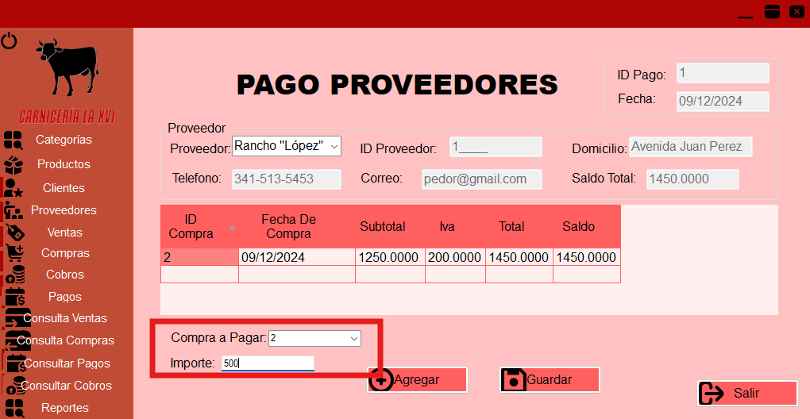

Ayuda -- Pago
Introducción
El módulo de Pagos a Proveedores en nuestro sistema te permite gestionar de manera eficiente todas las transacciones relacionadas con los pagos a tus proveedores.
Desde aquí puedes registrar nuevos pagos.
Agregar un Nuevo Pago
- Ingresa a la opción de pago proveedores en el apartado de Movimientos.
- Dale clic al botón de "Nuevo" que se encuentra en la parte inferior de la pantalla.
- Comienza seleccionando el proveedor al cual harás el pago.
- Con lo consecuente se llenarán automáticamente los demás datos del proveedor.
- Se mostrarán las compras que aún no han sido pagadas en un recuadro con datos generales.
- Selecciona la compra a pagar y captura el monto.

- Para guardar el pago, haz clic en el botón de "Grabar" que se encuentra en la parte inferior de la pantalla.
Preguntas Frecuentes
¿Cómo se selecciona la compra a pagar?
Desplazándose hacia la parte inferior izquierda donde encontrarás un desplegable con los números de las compras.
¿Cómo salir del área de pagos al menú principal?
Desplázate hasta al final en la esquina inferior derecha verás que hay un botón que dice "Salir", dale clic y te llevará directamente al menú principal.